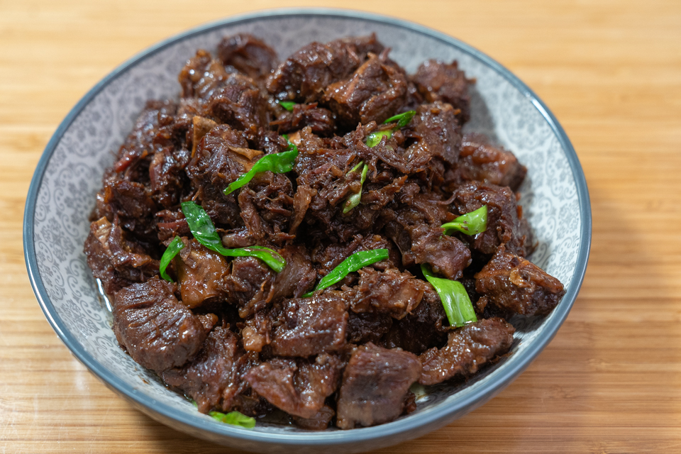

Home
Braised Beef

Description
Beef finger meat is the meat in between the ribs of a cow. It might be called boneless beef ribs. I usually find it in an Asian market but have seen it in a few regular supermarkets as well. If you can’t find it, you can substitute short ribs, chuck roast or beef shank. Any tough cut of meat will do since it will be pressure cooked to make it super tender.
Ingredients
- 3 pounds of beef finger meat cut to 1 inch per piece
- 2 table spoons of soy sauce
- 2 table spoons of dark soy sauce
- 1 tablespoon of rock sugar or granulated sugar
- 1oz of bruised ginger
- 1 stalk of chopped green onion
Steps
- Place beef, soy sauce, dark soy sauce, rock sugar and ginger in the inner cooking pot of an electric pressure cooker.
- Close and lock the lid, making sure it is tightly sealed. Pressure cook on high for 35 minutes.
- Once the pressure cooking is done, quick release the pressure.
- Skim off and discard some of the fat that has floated to the top.
- Press Sauté and adjust to high heat to reduce the sauce until thickened and syrupy. This will take about 15 minutes.
- Stir in the green onion.
- Serve with rice.